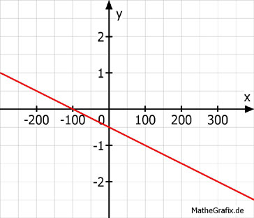

Lineare Funktionen Aufgabe 37 Ermitteln Sie die Funktionsgleichung der dargestellten Geraden. 2 Punktkoordinaten abgelesen:  A (0|-0,5) x1 y1 B (-100|0) x2 y2 y2 - y1 0 - (-0,5) m = --------- = --------- = - 0,005 x2 - x1 -100 - 0 b = -0,5 am Punkt A abgelesen. y = -0,005x - 0,5